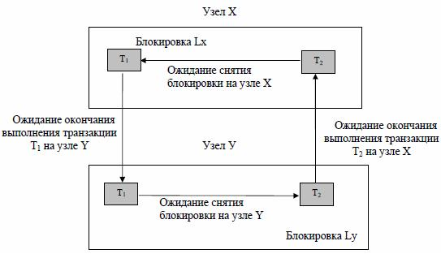

Обработка распределенных запросов и распределенная модель транзакций
Проблемы распределенных систем
Ниже более подробно описываются некоторые уже упомянутые проблемы. Основная проблема информационных сетей, по крайней мере глобальных, заключается в том, что они достаточно медленны. В типичной глобальной сети интенсивность обмена данными равна приблизительно 5 или 10 тыс. байт в секунду, а для обычного жесткого диска интенсивность обмена данными - около 5 или 10.млн байт в секунду. Вследствие этого основным требованием к распределенным системам является минимизация использования сети, т.е. сокращение до минимума количества и объема пересылаемых в сети сообщений. Стремление к достижению этой цели приводит, в свою очередь, к необходимости решения перечисленных ниже проблем:
- обработка запросов;
- управление каталогом;
- распространение обновления;
- управление восстановлением;
- управление параллелизмом.
Обработка запросов
Распределенным называется запрос, который обращается к двум и более узлам РБД, но не обновляет на них данные.
Запрашивающий узел должен определить, что в запросе идет обращение к данным на другом узле, выделить подзапрос к удаленному узлу и перенаправить его этому узлу.
Самой сложной проблемой выполнения распределенных запросов является оптимизация, т.е. поиск оптимального плана выполнения запроса. Информация, которая требуется для оптимизации запроса, распределена по узлам. Если выбрать центральный узел, который соберет эту информацию, построит оптимальный план и отправит его на выполнение, то теряется свойство локальной автономности.
Поэтому обычно распределенный запрос выполняется так: запрашивающий узел собирает все данные, полученные в результате выполнения подзапросов, у себя, и выполняет их соединение (или объединение), что может занять очень много времени.
При минимизации использования сети предполагается, что сама по себе оптимизация запроса, как и его исполнение, должна быть распределенной. Иначе говоря, общий процесс оптимизации обычно состоит из этапа глобальной оптимизации, который сопровождается несколькими этапами локальной оптимизации.
Например, допустим, что запрос Q задан на узле X и включает объединение отношения Rу, содержащего сто кортежей на узле Y, и отношения Rz, содержащего миллион кортежей на узле Z .
Оптимизатор на узле X выберет глобальную стратегию для выполнения запроса Q, при этом, очевидно, лучше переместить отношение Ry на узел Z, а не отношение Rz на узел Y (и конечно же, не следует перемещать оба отношения Ry и Rz на узел X. Тогда сразу после перемещения отношения Ry на узел Z стратегия выполнения объединения на узле Z будет выбрана локальным оптимизатором на узле Z.
Пример: Рассмотрим базу данных поставщиков и деталей (упрощенный вариант): S { S#, CITY } 10 000 хранимых кортежей на узле A Р { P#, COLOR } 100 000 хранимых кортежей на узле В SР { S#, P# } 1 000 000 хранимых кортежей на узле А Предполагается, что каждый хранимый кортеж имеет размер 25 байт (200 бит). Запрос "Получить сведения о находящихся в Лондоне (London) поставщиках красных (Red) деталей: S.S# WHERE EXISTS SP EXISTS Р ( S.CITY = 'London' AND S.S# = SP.S# AND SP.P# = P.P# AND P.COLOR = 'Red' ) Оценочные границы промежуточных результатов: -Число красных деталей = 10 -Число поставок, выполняемых поставщиками из Лондона = 100000 Предполагаемые параметры обмена данными в сети: -Интенсивность обмена данными = 50 000 бит/с -Задержка доступа = 0,1 с |
Теперь можно вкратце рассмотреть шесть возможных стратегий обработки этого запроса с вычислением для каждой i-стратегии общего времени передачи данных T[ i ] по следующей формуле:
T[i] = общая задержка доступа + (общий объем данных / интенсивность обмена данными) = (число сообщений / 10) +(число бит / 50000)
1 шаг. Переместить отношение Р на узел А и выполнить запрос на узле А.
T[ 1] = 0,1 + (100 000*200)/ 50 000 = приблизительно 400 с (6,67 мин)
2 шаг. Переместить отношения S и SP на узел В и выполнить запрос на узле В.
T[ 2 ] = 0,2 + ((10 000 + 1 000 000)*200)/50 000 = приблизительно 4 040 с (1,12 ч)
3 шаг. Соединить отношения S и SP на узле А, выбрать из полученного результата кортежи для поставщиков из Лондона, а затем для каждого кортежа на узле В проверить, не является ли соответствующая деталь красной. Каждая из этих проверок будет содержать два сообщения: запрос и ответ. Время передачи данных для таких сообщений будет значительно меньше по сравнению с задержкой доступа.
T[ 3 ] = приблизительно 20 000 с (5,56 ч)
4 шаг. Выбрать из отношения Р на узле В кортежи, соответствующие красным деталям, а затем для каждого кортежа на узле А проверить, не поставляется ли соответствующая деталь поставщиком из Лондона. Каждая из этих проверок будет содержать два сообщения: запрос и ответ. Время передачи данных для этих сообщений опять будет значительно меньше по сравнению с задержкой доступа.
T[ 4 ] = приблизительно 2 с
5 шаг. Соединить отношения S и SP на узле А, выбрать из полученного результата кортежи для поставщиков из Лондона, результат разбить на проекции по атрибутам S# и P#, а затем переместить на узел В. Завершить выполнение запроса на узле В.
T[ 5 ] = 0,1 + (100 000*200)/50 000 = приблизительно 400 с (6,67 мин)
6 шаг. Выбрать из отношения Р на узле В кортежи, соответствующие красным деталям, а затем переместить результат на узел А. Завершить выполнение запроса на узле А.
T[ 6 ] = 0,1 + (10*200)/50 000 = приблизительно 0,1 с
Эти результаты представлены в таблице 19
Таблица 19 - Стратегии распределенного выполнения запроса (итоги)
Стратегия | Метод | Время передачи данных |
1 | Переместить отношение Р на узел А | |
2 | Переместить отношение S и SP на узел В | 1,12 ч |
3 | Для каждой поставки из Лондона проверить, является ли деталь красной | 5,56 ч |
4 | Для каждой ли красной детали проверить, не поставляется ли она из Лондона | 2 с |
5 | Переместить сведения о поставках из Лондона на узел В | 6,67 мин |
6 | Переместить сведения о красных деталей | 0,1 с (наилучший результат) |
Внимательно ознакомившись с этими результатами, можно отметить следующие важные особенности:
- Каждая из шести стратегий представляет собой один из возможных подходов к решению этой проблемы, несмотря на очень значительные вариации во времени передачи данных.
- Интенсивность обмена данными и задержка доступа являются важными факторами, влияющими на выбор той или иной стратегии.
- Для плохих стратегий продолжительность операций вычисления и ввода-вывода данных пренебрежимо мала по сравнению со временем передачи данных.
В дополнение к сказанному выше следует отметить, что некоторые стратегии позволяют выполнять параллельную обработку на двух узлах. Таким образом, время отклика в такой системе может оказаться меньше времени отклика в централизованной системе. Обратите внимание, что в данном обсуждении игнорировался вопрос о том, какой узел получает окончательные результаты.
Управление каталогом
Каталог распределенной системы содержит не только обычные данные, касающиеся базовых отношений, представлений, индексов, пользователей и т.д., но также и всю информацию, необходимую для обеспечения независимости размещения, фрагментации и репликации. В таком случае возникает вопрос: где и как следует хранить системный каталог? Ниже перечислены некоторые варианты хранения системного каталога.
Централизованный каталог. Весь каталог хранится в одном месте, т.е. на центральном узле.
Полностью реплицированный каталог. Весь каталог полностью хранится на каждом узле.
Секционированный каталог. На каждом узле содержится его собственный каталог для объектов, хранимых на этом узле. Общий каталог является объединением всех разъединенных локальных каталогов.
Комбинация первого и третьего вариантов. На каждом узле хранится собственный локальный каталог (как в п. 3), кроме того, на одном центральном узле хранится унифицированная копия всех этих локальных каталогов (как в п. 1).
Для каждого подхода характерны определенные недостатки и проблемы. В первом подходе, очевидно, не достигается "независимость от центрального узла". Во втором утрачивается автономность функционирования, поскольку при обновлении каждого каталога это обновление придется распространить на каждый узел. В третьем выполнение нелокальных операций становится весьма дорогостоящим (для поиска удаленного объекта потребуется в среднем осуществить доступ к половине имеющихся узлов). Четвертый подход более эффективен, чем третий (для поиска удаленного объекта потребуется осуществить доступ только к одному удаленному каталогу), но в нем снова не достигается "независимость от центрального узла". В традиционных системах могут использовать другие подходы. В качестве примера здесь рассматривается подход, использованный в системе R*.
Для того чтобы описать структуру каталога системы R*, необходимо прежде всего рассмотреть принятый в ней порядок именования объектов. Именование объектов является существенным аспектом распределенных систем, поскольку, если два разных узла А и В содержат хранимое отношение под одинаковым именем R, это приводит к необходимости выработки некоторого метода обеспечения уникальности имен в рамках всей системы. Однако при указании пользователю уточненного имени (например, A.R и B.R) нарушается требование независимости расположения. В таком случае необходимо отображение известных пользователям имен на соответствующие системные имена.
В системе R* используется следующий подход к этой проблеме. В ней вводятся понятия печатного имени, т.е. имени объекта, на которое обычно ссылаются пользователи (например, в выражениях SQL), а также системного имени, которое является глобальным уникальным внутренним идентификатором этого объекта. Системное имя содержит четыре компонента:
- идентификатор создателя объекта;
- идентификатор узла создателя, т.е. узла, на котором была выполнена операция создания объекта;
- локальное имя, т.е. неуточненное имя объекта;
-идентификатор узла хранения, т.е. узла, на котором этот объект хранился в исходном состоянии.
Так, системное имя MARYLIN @ NEW YORK . STATS @ LONDON идентифицирует объект (например, хранимое отношение) с локальным именем STATS, созданный пользователем Marylin на узле в Нью-Йорке и изначально хранившийся на узле в Лондоне. Такое имя гарантировано от каких-либо изменений даже при перемещении этого объекта на другой узел.
Как уже отмечалось, пользователи обычно применяют к объектам их печатные имена, которые состоят из простого неуточненного имени: например, либо "локального компонента" системного имени (STATS в рассматриваемом примере), либо синонима системного имени, определенного с помощью специальной инструкции CREATЕ SYNONYM языка SQL, используемого в системе R*.
Приведем пример такой инструкции.
CREATЕ SYNONYM MSTATS FOR MARYLIN@NEWYORK.STATS@LONDON;
Теперь можно использовать одно из следующих выражений:
SELECT . . . FROM STATS . . . ;
SELECT . . . FROM MSTATS . . . ;
В первом случае (при использовании локального имени) системное имя может быть выведено на основе очевидных и принятых по умолчанию предположений, а именно на основе того, что данный объект был создан данным пользователем на данном узле и изначально хранился на этом узле. Одним из следствий такого способа будет то, что старые приложения для System R могут быть без всяких изменений запущены на выполнение в системе R*.
Во втором случае (при использовании синонимов) системное имя определяется помощью опроса соответствующей таблицы синонимов. Эти таблицы рассматриваются как первый компонент каталога, а каждый узел содержит набор таблиц всех пользователей, известных на данном узле, с отображением синонимов пользователя на системные имена.
В дополнение к таблицам синонимов на каждом узле поддерживаются следующие объекты:
- элемент каталога для каждого объекта, созданного на этом узле;
- элемент каталога для каждого объекта, хранимого в данный момент на этом узле.
Допустим, пользователь создает запрос для поиска синонима MSTATS. Сначала система ищет соответствующее ему системное имя в соответствующей таблице синонимов (чисто локальная подстановка). После этого становится известным место создания объекта; в рассматриваемом примере это Лондон. Затем система опрашивает каталог Лондона, что в общем случае приводит к подстановке с удаленным доступом (первый удаленный доступ). Каталог Лондона будет содержать элемент для данного объекта согласно упомянутому выше пункту 1. Если искомый объект находится все еще в Лондоне, то он будет немедленно найден. Однако, если он перемещен, например в Лос-Анджелес, в таком случае это будет указано в элементе каталога Лондона. Благодаря такой организации система теперь может опросить каталог Лос-Анджелеса (второй удаленный доступ), который согласно пункту 2 будет содержать элемент для искомого объекта. Таким образом, этот объект будет найден, по крайней мере, с помощью двух попыток удаленного доступа.
Более того, при очередной миграции объекта, например в Сан-Франциско, в системе будут выполнены следующие действия:
- вставлен элемент каталога Сан-Франциско;
- удален элемент каталога Лос-Анджелеса;
- элемент каталога Лондона, указывающий на Лос-Анджелес, будет заменен элементом каталога, указывающим на Сан-Франциско.
Общий эффект от их выполнения заключается в том, что объект снова может быть найден с помощью всего лишь двух попыток удаленного доступа. К тому же такая система является действительно распределенной, так как в ней нет каталога на центральном узле, а также не существует никакой другой возможности для глобального краха системы.
Следует отметить, что в модуле распределенной работы в системе DB2 используется схема именования объектов, похожая на описанную выше, но не идентичная ей.
Распространение обновления
Как указывалось выше, основной проблемой репликации данных является то, что обновление любого логического объекта должно распространяться на все хранимые копии этого объекта. Трудности возникают из-за того, что некоторый узел, содержащий данный объект, может быть недоступен (например, из-за краха системы или данного узла) именно в момент обновления. В таком случае очевидная стратегия немедленного распространения обновлений на все копии может оказаться неприемлемой, поскольку предполагается, что обновление (а значит, и исполнение транзакции) будет провалено, если одна из этих копий будет недоступна в текущий момент. В некотором смысле, при использовании такой стратегии данные действительно будут менее доступны, чем при их использовании в нереплицированном виде. Таким образом, существенно подрывается одно из преимуществ репликации, упомянутое в предыдущем разделе.
Общая схема устранения этой проблемы (и не единственно возможная в этом случае), называемая схемой первичной копии, описана ниже.
- одна копия каждого реплицируемого объекта называется первичной копией, а все остальные - вторичными;
- первичные копии различных объектов находятся на различных узлах (таким образом, эта схема является распределенной);
- операции обновления считаются завершенными, если обновлены все первичные копии. В таком случае в некоторый момент времени узел, содержащий такую копию, несет ответственность за распространение операции обновления на вторичные копии. Однако поскольку свойства транзакции АСИД (атомарность, согласованность, изоляция, долговечность) должны выполняться, то подразумевается, что "некоторый момент" времени предшествует завершению исполнения транзакции.
Конечно, данная схема приводит к некоторым дополнительным проблемам.
Обратите внимание, что эти проблемы приводят к нарушению требования локальной автономии, поскольку даже если локальная копия остается доступной, выполнение транзакции может потерпеть неудачу из-за недоступности удаленной (первичной) копии некоторого объекта.
Под требованием атомарности транзакции подразумевается, что распространение всех операций обновления должно быть закончено до завершения соответствующей транзакции. Однако существовало несколько коммерческих программных продуктов с поддержкой менее амбициозной формы репликации. В ней распространение обновления гарантировалось в будущем (вероятно, в некоторое заданное пользователем время), но не обязательно в рамках соответствующей транзакции. К сожалению, термин "репликация" в некоторых программных продуктах был использован в несколько ином смысле, чем следует. В результате на рынке программного обеспечения утвердилось мнение, что распространение обновления откладывается вплоть до завершения соответствующей транзакции. Проблема такого "откладываемого распространения" заключается в том, что пользователь в некоторый заданный момент времени не знает, согласована база данных или нет. Поэтому в базе данных не может быть гарантирована совместимость в произвольный момент времени.
В заключение стоит привести несколько дополнительных замечаний в отношении откладываемого распространения обновления.
Концепция репликации в системе с откладываемым распространением обновления может рассматриваться как ограниченное воплощение идеи снимков.
Одна из причин использования в программных продуктах откладываемого распространения обновления заключается в том, что для обновления всех реплик до завершения транзакции требуется поддержка протокола двухфазной фиксации, для которого, в свою очередь, требуется исправность всех соответствующих узлов и их готовность к запуску во время выполнения транзакции, что отрицательно влияет на производительность. Такое положение дел характеризуется появлением в печати статей с загадочными заголовками типа "Репликация или двухфазная фиксация". Причем их загадочность вызвана тем, что сравниваются преимущества двух совершенно разных подходов.
Управление восстановлением
Управление восстановлением в распределенных системах обычно основано на протоколе двухфазной фиксации (или некотором варианте этого протокола). Поддержка двухфазной фиксации необходима в любой среде, в которой одна транзакция может взаимодействовать с несколькими автономными администраторами ресурсов. Однако она особенно важна в распределенной системе, поскольку администраторы ресурсов, т.е. локальные СУБД, действуют на разных узлах и, следовательно, автономны.
Здесь необходимо отметить несколько важных особенностей.
Управление параллелизмом
Управление параллелизмом в большинстве распределенных систем, как и во многих нераспределенных системах, основано на блокировке. Однако в распределенной системе запросы на проверку, установку и снятие блокировок являются сообщениями (здесь предполагается, что рассматриваемый объект находится на удаленном узле), что влечет за собой дополнительные накладные расходы. Рассмотрим, например, транзакцию Т, которая нуждается в обновлении объекта, имеющего реплики на n удаленных узлах. Если каждый узел управляет блокировками для объектов, хранимых на этом узле (как это было бы при соблюдении локальной автономии), то для простейшего способа управления параллелизмом потребовалось бы по крайней мере 5n сообщений:
-n запросов на блокировку;
-n разрешений на блокировку;
-n сообщений об обновлении;
-n подтверждений;
-n запросов на снятие блокировки.
Конечно, можно легко усовершенствовать этот способ, используя подтверждения, вложенные в блок данных обратного направления. Таким образом могут комбинироваться запрос на блокировку и сообщения об обновлении, а также разрешение на блокировку и подтверждения. Но даже в таком случае общее время обновления может быть на несколько порядков выше, чем в централизованной системе.
Обычный подход к этой проблеме заключается в принятии стратегии первичной копии, которая в краткой форме была представлена выше. Для данного объекта R узел, содержащий первичную копию объекта R, будет управлять всеми операциями блокировки, включающими R (помните, что первичные копии разных объектов в общем случае могут быть расположены на различных узлах). При такой стратегии множество всех копий объекта в целях блокировки может рассматриваться как единый объект, а общее число сообщений будет снижено от 5n до 2n+3 (один запрос на блокировку, одно разрешение на блокировку, n обновлений, n подтверждений и один запрос на снятие блокировки). Однако при таком решении опять утрачивается автономность, т.е. транзакция может оказаться неуспешной, если первичная копия недоступна (даже при использовании транзакции только для чтения), а локальная копия доступна. Заметьте, что для блокировки первичной копии необходимы не только операции обновления, но также и операции извлечения. Таким образом, неприятный побочный эффект при использовании стратегии первичной копии заключается в снижении производительности и доступности данных как для операций извлечения, так и для операций обновления.
Другой проблемой блокировки в распределенной системе является то, что она может привести к глобальному тупику, который охватывает два или более узлов. На рис. 4 представлен пример возникновения такого тупика:

Рисунок 4 - Пример глобального тупика